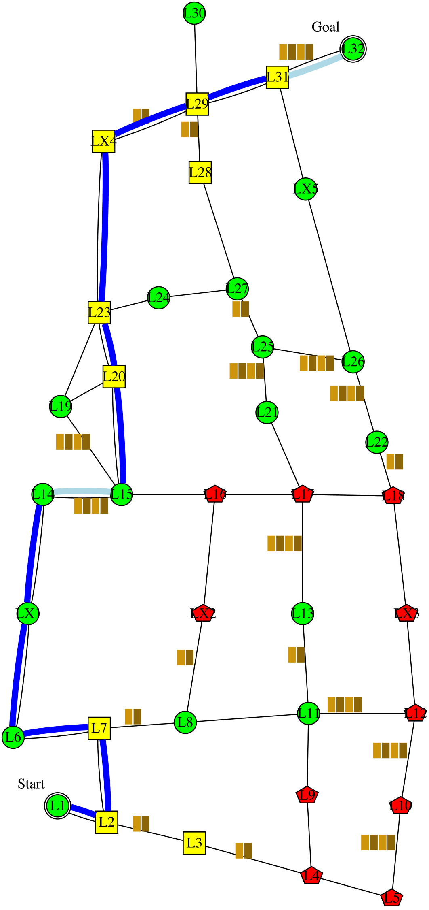
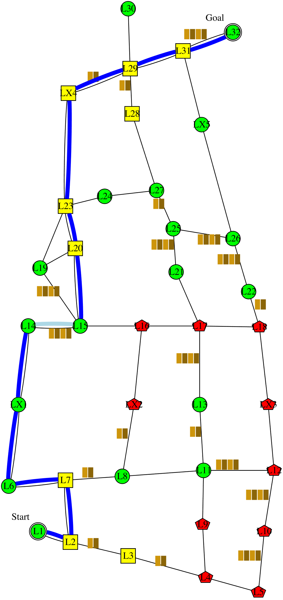

I'm planning to follow this policy . It is expected to have 0.6 collision; take 196 minutes; and have intrusiveness-penalty of 4: be non-intrusive 11 steps, somewhat-intrusive 4 steps, and very-intrusive 0 step. It has the lowest expected intrusiveness. Alternatively, following this policy  would reduce the collision to 0.4 collision. However, I didn't choose that policy because it would increase the time to 203 minutes. The decrease in collision is not worth the increase in time. Alternatively, following this policy would reduce the time to 192 minutes. However, I didn't choose that policy because it would increase the collision to 0.8 collision. The decrease in time is not worth the increase in collision.